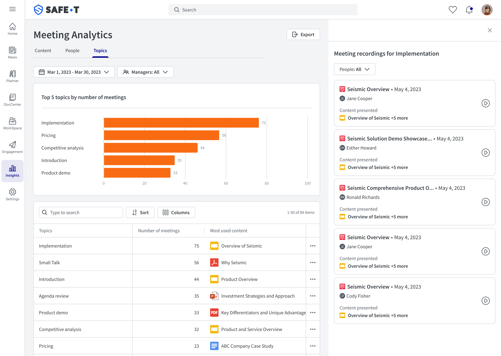
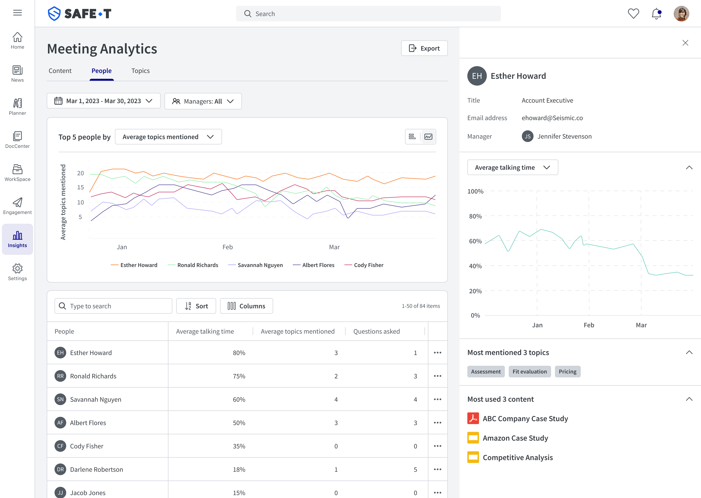
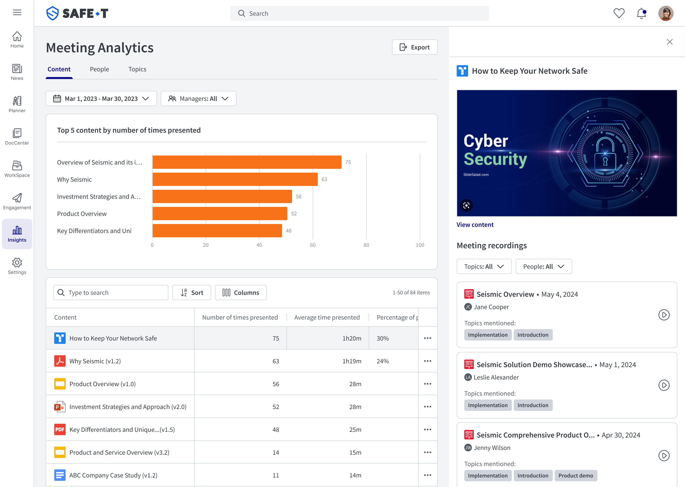
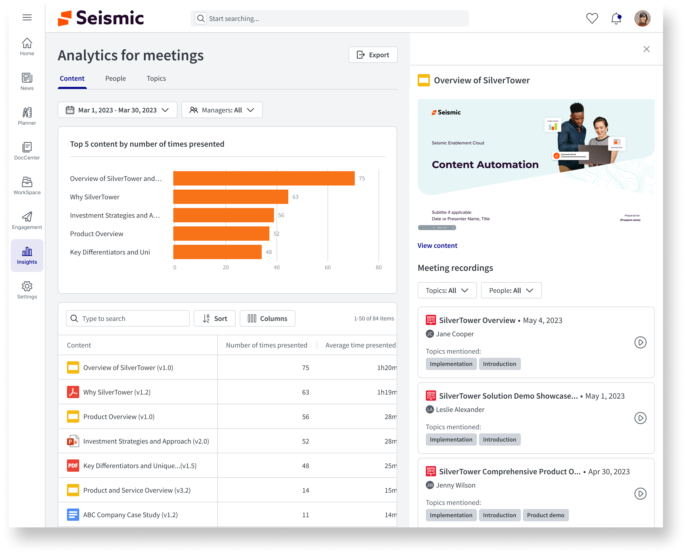
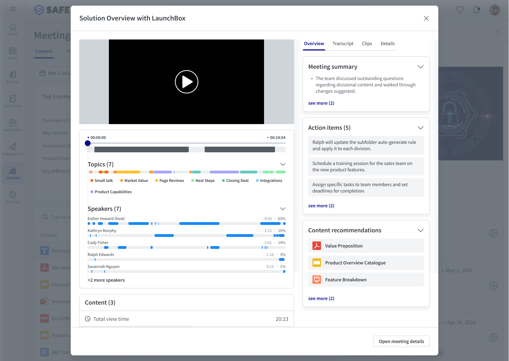

Three outcomes that drove investment
Data without insight is just noise
The relentless pursuit of closing deals keeps sellers in a constant meeting marathon. Sales managers craved insights into team performance, while enablers wanted to understand content usage and effectiveness. Seismic solves this by going beyond attendance data — offering a wealth of insights to improve content and engagement.
By tracking beyond attendance (slides viewed, time per segment, questions asked, seller behavior), analytics can empower sellers and managers to understand material effectiveness and seller adherence to talk tracks. The goal: equip them with tools to help their teams thrive.
Setting up the team for the right problem
As Product Design Manager, I led the initiative to empower Sales Managers and Enablers to understand team performance and content effectiveness during meetings. My primary contribution was ensuring deep user research informed the data model — so the dashboard presented actionable insights, not just raw numbers.
I directed the team's stakeholder access, making sure we were talking to the right people (Sales Managers and Seismic's top Enablers) and asking the right questions. From there, I guided the transition from research insights to information architecture, then oversaw design quality through to launch.
Going deep before going wide
From data model to actionable UI
The core design challenge was deciding which metrics to surface and how to present them without overwhelming the user. We worked closely with data stakeholders to understand what was measurable, then made editorial decisions about what was actually useful.
Our team explored multiple approaches to data visualization — from graph explorers to tabular formats — ultimately landing on a layout that made the most critical information immediately scannable for busy sales managers.


A dashboard that earned its place in the platform
The Meetings Analytics dashboard shipped and was quickly adopted by Sales Managers and Enablers who had long wanted better visibility into what was happening in their teams' meetings. The product opened a new analytics category for Seismic, validating the investment in meeting intelligence.



